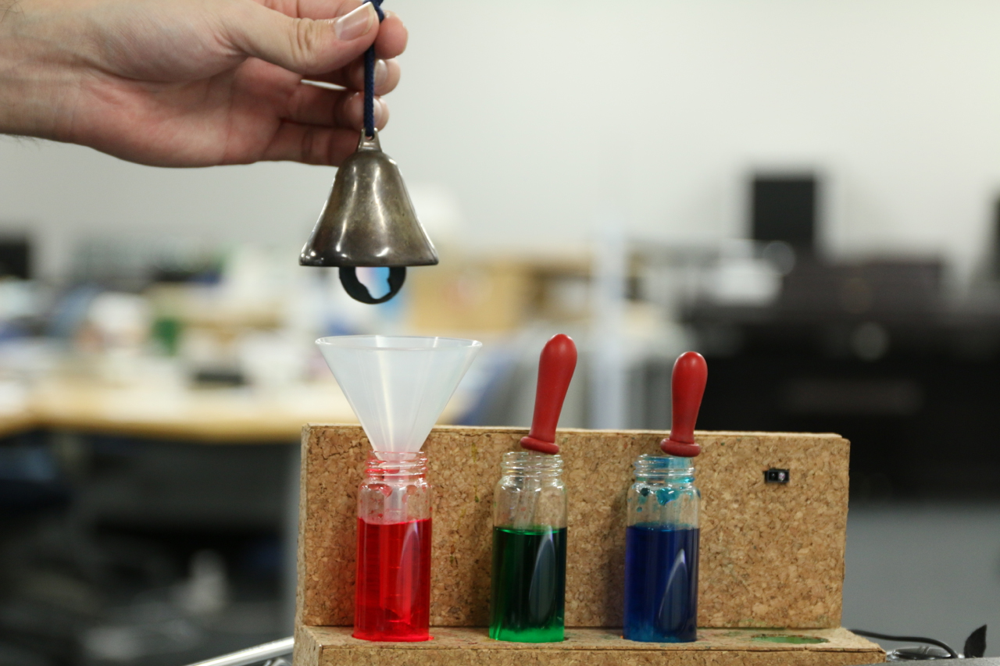
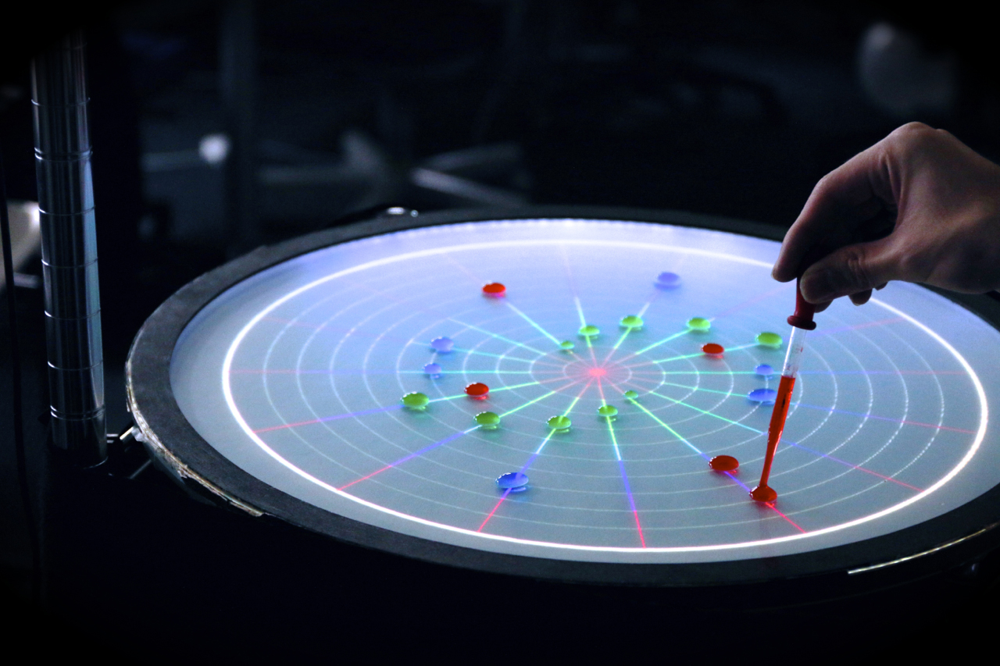
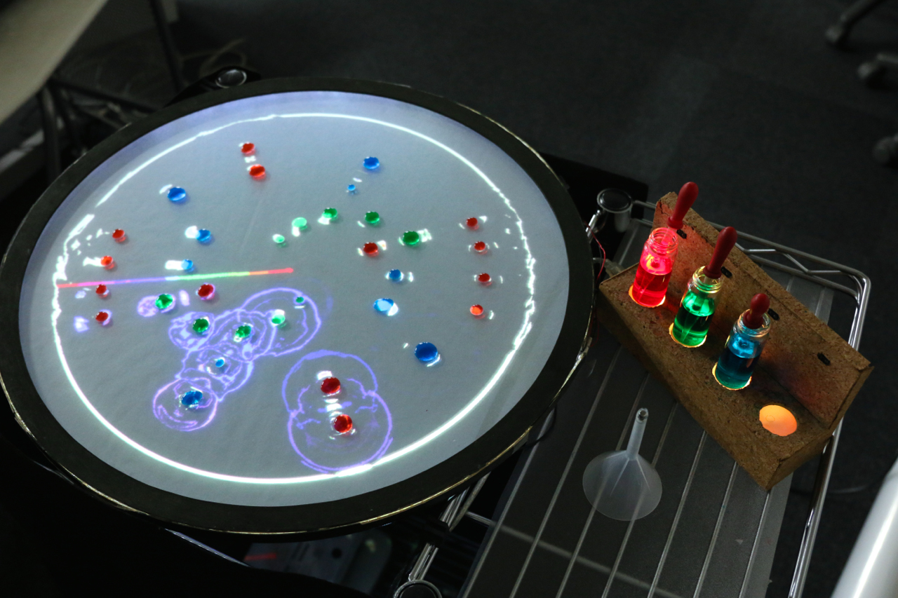

DropNotes

Overview
DropNotes is a tabletop tangible user interface for music composition. A user infuses a sound into colored water, picks it with a dropper and composes a music by arranging the composition of droplets. The purpose of the project was to create a more accessible way to compose music. Users only need to take simpler actions, such as putting a funnel into a bottle, picking colored water from a bottle, putting a droplet on a table, etc, rather than learning a complicated graphical user interface in a prevalent music composition software.
My Role
In this project, I was engaged mostly as a Designer/Manager with development duties. I worked with two developers and managed how we wanted to divide development duties and kept the project on track.
Process
The initial idea for the project was basically our interest in turning existing computer-mediated human activities (like using GUI based software to compose a music) into more tangible interactions.
First of all, we held a competitive analysis session for tabletop music composition interfaces. We found there was much previous work done with tangibles, and few of them focused on an overall composition process (e.g., some work just concentrated on a recording phase, others are arranging notes, etc.) We then held a quick role-playing brainstorming session, imitating the possible final interaction with some tangible artifacts at hand (such as tissue box, scissors, cap of a pet bottle, etc.) on a table, in an effort to figure out what kind of and what shape of material is more suitable for the interactions we want to create. Finally we decided to represent the whole composition process in series of tangible interactions related to water, such as a funnel, droplets, water dyes, etc.
Since this type of interaction is hardly seen in our everyday life, we started our prototyping session in a very early stage. Here is the video of the most updated version of DropNotes.
  Outcome
We published several research papers about the project, and also now posting to SIGGRAPH 2015.
Publications
Musashi Nakajima, Hidekazu Saegusa, Yuto Ozaki, Yoshihiro Kanno, "DropNotes: A Music Composition Interface Utilizing the Combination of Affordances of Tangible Objects", Proceedings of the 10th International Conference on Advances in Computer Entertainment (2013) (equally contributed 1st author).
Musashi Nakajima, Hidekazu Saegusa, Yuto Ozaki, Yoshihiro Kanno, “DropNotes: A Music Composition Interface Utilizing the Combination of Affordances of Tangible Objects”, Inter College Computer Music Concert 2013 (2013) [Varsity Student Research Exhibition].